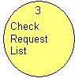
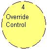
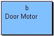
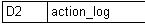
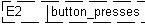
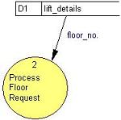
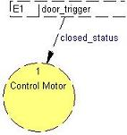

|
|
Real Time - Yourdon Data Flow Diagram
Real time yourdon allow a user to model the processes, events, data
and external objects of a system much like the
data flow diagram tool but
introduces elements to deal with real time systems. Real time yourdon
diagrams provided by the multi-CASE tool enforce a number of rules which
make it impossible for inconsistency to occur within a model.
Abstraction is provided allowing a system to be decomposed into
manageable segments and to show underlying state models. The real time
yourdon tool has options allowing it to be used to model both physical
and logical systems. This tool can be used as a regular DFD tool should
the Yourdon notation be preferred to the notation provided by the
standard DFD tool.
To view the main multi-CASE help page click
here
|
|
|
|
Real-Time Data Flow Diagrams
The Real-Time DFD tool provides several modeling elements. These elements are
Processes, Control Process,
External Entities, Data
Stores, Event Stores, Data
Flows and Event Flows.The elements work together
in order to provide a model of the processes, interactions and flow of data and
events within a real-time system. In order to manage complexity the tool
provides for abstraction in the form of
hierarchical decomposition. This involves the ability of a process to
contain an underlying data flow diagram which describes the process in more
detail. Control processes can optionally be decomposed into a
state transition diagram. Decomposition is a very
powerful way of managing the complexity of real-life systems and allows the
modeler to view a system from either a conceptual or detailed level. The
diagram that is at the top of the hierarchy is often referred to as the
context diagram. This top level model always contains a single process
that is representative of the entire system being modeled. The top level
process is decomposed into an underlying data flow diagram, often called the
level 1 diagram, in which the detail of the system's internal workings are
modeled.
A number of utilities are provided within the RT-DFD tool including the
ability for the user to perform a model check and to generate a textual report.
The model check utility identifies potential areas of error within a model.
Any warnings generated are shown within the message box window and can be double
clicked to identify the element for which the warning has been generated.
The report generation facility produces a hyper-linked textual representation of
the model. It identifies all the modeling elements, giving the details of each
and describing their relationship to other elements within the model.

Processes
Definition: A process is used to model an activity, action, operation
or function that is performed within the domain of the system being modeled.
This element is used to identify the behavior that is performed within the system.
Processes send and receive data or events to/from data
stores, external entities and other processes
using data flows and event flows.
Processes have a name and id number. The name of a process is often a verb rather
than a noun, reflecting the fact it describes an action or actions that are
performed. A process is automatically assigned a unique identifier.
This is used to distinguish different processes and is not an indication
of the order in which processes are performed.
Processes may contain an underlying data flow diagram, allowing support for
a concept known as hierarchical decomposition.
A process may also contain an underlying storyboard
model that allows for the definition of any graphical user interface requirements
related to the process.
Representation: Processes are represented by a circular shaped nodes.
The unique identifier is shown in the top and the process name is specified
within the larger lower section. e.g.


Creation: A process is added by right clicking on a RT-DFD model
diagram editor (not a context diagram) or on the RT-DFD model icon within the
project tree and selecting the "Add Process" option from the menu. Position the
process outline where you wish it to be placed on the diagram and left click,
enter the name when prompted and click "OK".
Rules: Only one process can appear on the context diagram, this is automatically
created and represents the system as a whole. Every process should have at least
one incoming and one outgoing data or event flow.
Operations: Move Forwards/Backwards, Bring to Front, Send to Back, Delete,
Add Data Flow, Add Event Flow, Create Subordinate Model, View Subordinate Model,
Delete Subordinate Model, Create Duplicate, Change Process/Text Color and Edit
Process Annotation/Name.
Control Processes
Definition: A control process is used to model an activity, action,
operation or function that is performed in order to handle (or generate) one
or more events. Control processes send and receive events to/from event
stores, external entities and other processes
using event flows. Control processes have a name and
ID number. The name of a control process is often a verb rather than a noun,
reflecting the fact it describes an action or actions that are performed.
A control process is automatically assigned a unique identifier. This
is used to distinguish different control processes and is not an indication
of the order in which control processes are performed. Control process are not
shown on the context diagram.
Control processes may contain an underlying data flow diagram or state
transition diagram, allowing support for a concept known as hierarchical
decomposition. A control process may also contain an underlying storyboard
model that allows for the definition of any graphical user interface requirements
related to the process.
Representation: Control processes are represented by a circular shaped
nodes with a dashed outline. The unique identifier is shown in the top and
the control process name is specified within the larger lower section. e.g.

Creation: A control process is added by right clicking on a RT-DFD
model diagram editor (not a context diagram) or on the RT-DFD model icon within
the project tree and selecting the "Add Control Process" option from the menu.
Position the process outline where you wish it to be placed on the diagram and
left click, enter the name when prompted and click "OK".
Rules: Control processes can not appear on the context diagram. Every
control process should have at least one incoming and outgoing event flow.
Operations: Move Forwards/Backwards, Bring to Front, Send to Back, Delete,
Add Data Flow, Add Event Flow, Create Subordinate Model, View Subordinate DFD/STD,
Delete Subordinate DFD/STD, Create Duplicate, Change Process/Text Color and
Edit Process Annotation/Name.
External Entities
Definition: An external entity is used to model an object that
interacts with the system in someway, such as a person; external device; or even
another system. External entities send and receive data and/or events to
processes/control processes
using data flows/event flows.
External entities have a name and a unique identifier. The name of an
external entity is often a noun rather than a verb, reflecting the fact that it
represents an object rather than some action that is performed. An external
entity is automatically assigned a unique identifier when it is created.
Since external entities are external to the system they are always shown on the
context diagram.
Representation: External entities are represented by a rectangular
shaped node with the unique identifier displayed at the top and the name label
displayed in the center. e.g.

Creation: An external entity is added by right clicking on a RT-DFD
model diagram editor or on the RT-DFD model icon within the project tree and
selecting the "Add External Entity" option from the menu. Position the external
entity outline where you wish it to be placed on the diagram and left click,
enter the name when prompted and click "OK". If an external entity is created on
a diagram other than the context diagram then it is automatically created on all
levels above to ensure consistency.
Rules: Every external entity should have at least one incoming and/or
one outgoing data or event flow.
Operations: Move Forwards/Backwards, Bring to Front, Send to Back, Delete,
Add Data Flow, Add Event Flow, Create Duplicate, Change External/Text Color
and Edit External Annotation/Name.
Data Stores
Definition: A data store is used to model the storage of data within a
system. This element is used to identify the necessity to store certain
information for either long/short periods of time during system activities. Data
stores send and receive data to/from processes using
data flows. Data Stores have a name and a unique
identifier. The name of a data store is often a noun rather than a verb,
reflecting the fact that it represents information rather than some action that
is performed. A data store is automatically assigned a unique identifier when it
is created. Data stores are not shown on the context diagram.
In order to allow different types of systems to be modeled data store
elements may be assigned a type that identifies how the data is actually stored.
These types can be used to signify data that is either computerized or manual,
and persistent or transient (see below).
Representation: Data stores are shown using an open ended rectangle,
with a dividing bar at the left-hand side. The unique identifier prefixed with
letters representing how the data is stored is shown to the left of the dividing
bar, and the name of the store is shown to the right of the dividing bar. e.g.

The type that prefixes the id number has the following meaning -
- 'D' - Computerized. (The data is stored using a computer). This is the
default.
- 'T' - Computerized. Transient (The data is stored using a computer, but
only temporarily for a short amount of time).
- 'M' - Manual (The data is stored without the use of a computer).
- 'T(M)' - Manual Transient ( The data is stored without the use of a
computer, but only temporarily for a short amount of time).
Creation: A data store is added by right clicking on a RT-DFD model
diagram editor (not a context diagram) or on the RT-DFD model icon within the
project tree and selecting the "Add Data Store" option from the menu. Position
the store outline where you wish it to be placed on the diagram and left click,
enter the name when prompted and click "OK".
Rules: A data store cannot appear on the context diagram. Every data
store should have at least one incoming and one outgoing data flow. Data flows
linked to data stores must also be connected to processes.
Operations: Move Forwards/Backwards, Bring to Front, Send to Back, Delete,
Add Data Flow, (set) Transient, (set) Manual, Create Duplicate, Change
Store Line/Text Color and Edit DataStore Annotation/Name.
Event Stores
Definition: An event store is used to model the storage of
events within a system. This element is used to
identify the necessity to store certain events for either long/short periods of
time during system activities. Event stores send and receive events to/from
control processes/processes
using event flows. Event stores have a name and a
unique identifier. The name of an event store is often a noun rather than
a verb, reflecting the fact that it represents information rather than some
action that is performed. An event store is automatically assigned a unique
identifier when it is created. Event stores are not shown on the context
diagram.
In order to allow different types of systems to be modeled event store
elements may be assigned a type that identifies how the event is actually
stored. These types can be used to signify data that is either
computerized or manual, and persistent or transient (see below).
Representation: Event stores are shown using an open ended rectangle
with a dashed line and a dividing bar at the left-hand side. The unique
identifier prefixed with letters representing how the event is stored is shown
to the left of the dividing bar, and the name of the store is shown to the right
of the dividing bar. e.g.

The type that prefixes the id number has the following meaning -
- 'E' - Computerized. (The event is stored using a computer). This is the
default.
- 'E(T)' - Computerized. Transient (The event is stored using a computer,
but only temporarily for a short amount of time).
- 'E(M)' - Manual (The event is stored without the use of a computer).
- 'E(TM)' - Manual Transient ( The event is stored without the use of a
computer, but only temporarily for a short amount of time).
Creation: An event store is added by right clicking on a RT-DFD model
diagram editor (not a context diagram) or on the RT-DFD model icon within the
project tree and selecting the "Add Event Store" option from the menu. Position
the store outline where you wish it to be placed on the diagram and left click,
enter the name when prompted and click "OK".
Rules: An event store cannot appear on the context diagram. Every
event store should have at least one incoming and one outgoing event flow. Event
flows linked to event stores must also be connected to either a control process
or a regular process.
Operations: Move Forwards/Backwards, Bring to Front, Send to Back, Delete,
Add Event Flow, (set) Transient, (set) Manual, Create Duplicate, Change
Store Line/Text Color and Edit Event Store Annotation/Name.
Data Flows
Definition: A data flow is used to model the flow of data between
processes, external entities
and data stores. Data flows show the movement of
data throughout a system and help identify what data is consumed and produced by
the various modeling elements. A data flow has a name and a direction of
flow. The name of the data flow reflects the data that is being
transferred between the connected elements. Data flows can be specified as
being either discrete or continuous. A discrete flow represents a flow of
information at non-deterministic points in time, whereas a continuous flow
represents a flow of information on a continuous basis. There are strict rules
that determine what elements may be linked to what other elements. These
rules ensure that data is never transferred without the involvement of a
process.
Representation: A data flow is represented by a graphical link with
either a single or double arrow at the destination end, with the latter being
used to show continuous flows. The name label describing the information
that is being passed is shown along side the link. e.g. a data flow from "lift_details"
to "Process Floor Request"

Creation: A data flow is added by right clicking on an element, which
is to be the source of the data flow and selecting the "Add Data Flow" option
from the menu. Position the other end of the flow outline on the element that is
to be destination of the flow and left click. Enter the name when prompted and
click "OK".
Rules: Either the source or destination of a data flow must be a
process. i.e. it is not possible to connect an external entity directly to a
data store etc.
Operations: Move Forwards/Backwards, Bring to Front, Send to Back, Delete,
Add/Remove Link Point, Make Discrete, Make Continuous, Reverse Direction, Is
Bi-Directional, Change Flow Color, Edit Flow Annotation,/Name.
Event Flows
Definition: An event flow is used to model the flow of events between
control processes, processes,
external entities and
event stores. Event flows show the movement of events throughout a
system and help identify what events are consumed and produced by the various
modeling elements. An event flow has a name and a direction of flow.
The name of the event flow reflects the event that is being transferred between
the connected elements. A discrete flow represents an event that occurs at
non-deterministic points in time, whereas a continuous flow represents an event
that occurs on a continuous basis. There are strict rules that determine what
elements may be linked to what other elements. These rules ensure that an
event is never transferred without the involvement of a control or regular
process.
Representation: An event flow is represented by a graphical link with
either a single or double arrow at the destination end, with the latter being
used to show continuous flows. The name label describing the event information
that is being passed is shown along side the link. e.g. an event flow from "door_trigger"
to "Control Motor"

Creation: An event flow is added by right clicking on an element,
which is to be the source of the event flow and selecting the "Add Event Flow"
option from the menu. Position the other end of the flow outline on the element
that is to be destination of the flow and left click. Enter the name when
prompted and click "OK".
Rules: Either the source or destination of an event flow must be a
control process or regular process. i.e. it is not possible to connect an
external entity directly to an event store etc.
Operations: Move Forwards/Backwards, Bring to Front, Send to Back, Delete,
Add/Remove Link Point, Make Discrete, Make Continuous, Reverse Direction, Is
Bi-Directional, Change Flow Color, Edit Flow Annotation,/Name.
Hierarchical Decomposition
Hierarchical Decomposition describes the concept used to manage complexity
within real-time data flow diagrams. Each process or control process has
the potential to be decomposed into an underlying data flow diagram, or in the
case of control processes an underlying
state transition diagram.
This approach is often referred to as leveling (since multiple levels exist
within a single model). The multiple levels created form a strict
hierarchy, i.e. each data flow diagram is owned by exactly one parent process.
When a process is decomposed to a lower level, the incoming and outgoing data
and event flows to that process must also be shown on the lower level. This is
necessary since the internal workings of the process must show how these flows
are processed. Traditionally the process of ensuring that all data and
event flows are consistent between levels is known as balancing. The
RT-DFD tool provides automatic balancing features to ensure consistency between
levels, e.g. if a data flow exists on more than one level and its name is
changed on one of the levels then this change will be automatically reflected on
all levels where the flow exists.
A process may be decomposed by right clicking on the process and selecting
the "Create Subordinate Model" option. This will create and display a
lower level RT-DFD. Once a model has been created it can be viewed by
either double clicking the process, or selecting the "View Subordinate Model"
menu option. When a new subordinate model is first created a gray colored
(non-selectable) oval shape is shown that represents the parent process.
All data and event flows that are connected to the process on the upper level
will be shown connected to this outline and be rendered as red dotted lines.
Also all the elements linked to these data and event flows on the upper level
will be shown (in a lighter color) outside the gray bounding ellipse. This style
of rendering allows the user to see what upper elements the process directly
interacts with, even from the lower level model.
A control process is slightly different to a regular process in that it can
contain either a subordinate data flow diagram or a subordinate state transition
diagram (but not both). If a control process contains a subordinate DFD then
that model may only contain control processes, event flows and event stores.
State transition diagrams are different kinds of models used to show how the
system responds to events depending on some internal state. State transition
diagrams show the different states of a control process within the system and
detail how the different states are entered and exited depending on incoming
events. A separate help page describing
state transition diagrams is
available.
As the content of the lower level model evolves each of the data and event
flows should be linked to elements within the lower level model. This can
be achieved by left clicking on the end of the flow and dragging it to the
desired destination element. Once the left button is released the flow will be
attached to the new destination element. If a flow that has been attached
to an internal element is deleted it is re-attached to the gray bounding box.
This allows data and event flows to be unattached from elements if required.
If a flow attached to the gray bounding ellipse is deleted then the flow will be
deleted as normal (on this and the upper level).
Example
Below is an example of a real time DFD.